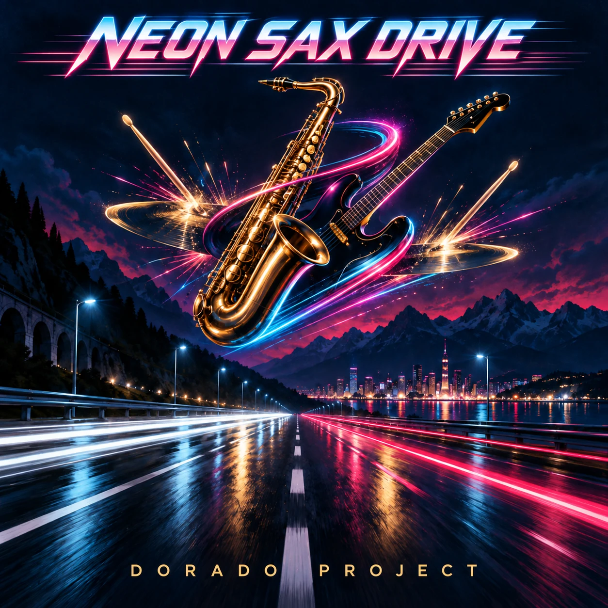

SINGLE · INSTRUMENTAL
Neon Sax Drive
Synthwave / Jazz-rock
A high-speed instrumental collision of 1980s synthesizers, electric guitar, saxophones and one completely unhinged drum solo.
Listen on Spotify →
SINGLE · INSTRUMENTAL
Synthwave / Jazz-rock
A high-speed instrumental collision of 1980s synthesizers, electric guitar, saxophones and one completely unhinged drum solo.
Listen on Spotify →From synthpop to rock: explore more tracks and the story behind Dorado Project.
Explore all tracks →